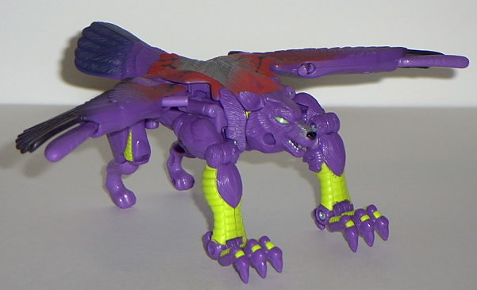
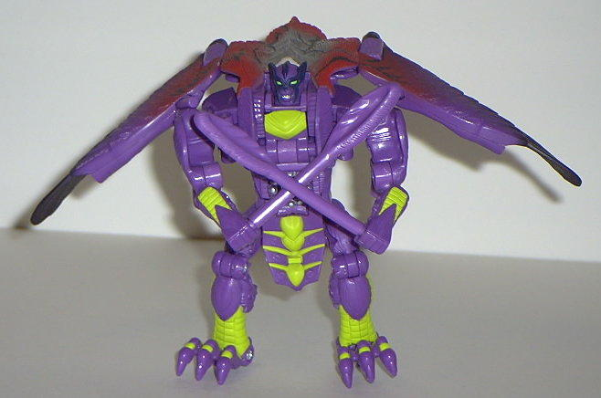

Silverbolt
(Universe)
Silverbolt
(Universe)


Allegiance
: Autobot
Size
: Deluxe
Difficulty of Transformation
: Medium
Color Scheme
: Purple, black, flat
greenish yellow, light red, and some silver, purplish black, bright green,
and gunmetal silver
Rating
: 9.4
(NOTE: Because this is a repaint, this is
not a full-blown review. This mainly covers any changes made to the mold
and the color scheme, and merely compares it to the Fuzor Silverbolt. For
a review on the mold itself, read the review of the Fuzor Silverbolt
here
.)
Silverbolt's color scheme
immediately grabs your eye in the toy isle and puts it in a stranglehold
until you buy him. Egads, purple and black with yellow accents already
goes together well enough, but then they had to go and add that freakin'
awesome "Energon radiation" pattern on his back. Said pattern takes up
most of his back, and is red on the outside, fading into silver at the
center. But that's not all- a darker, gunmetal silver color is used for
lightning-esque "bolts" throughout his back, too. (Hey, silver bolts...
heh, I just got that.) It looks absolutely eye-watering awesome. The yellow
accents on his body work very well, and there's just enough of them where
you don't get sick of the color. Plus, Silverbolt has green eyes, man!
And a slitted eye in beast mode! How can you NOT like that!?
Silverbolt also has
a slight mold change- his "belly" in robot mode has been remolded so that
an Autobot spark crystal can fit in there. Nifty. The hinges that hold
together his waist also hold up much better than they did on some of the
earlier batches of the original Fuzor Silverbolt, so no problems there.
Basically, you will
either love or hate Silverbolt's new color scheme. I absolutely, positively
LOVE it, and consider it the best repaint EVER as of this writing (9/03).
But others think it's ugly because of its impracticality. I can certainly
overlook that for this awesome of a color scheme, though.
Silverbolt Bio:
FUNCTION: Aerial Assault/Tracker
MOTTO: "Even in the face of the darkest
nights, justice will ultimately prevail."
Hailed as a Maximal hero by the general
populace for his role in the liberation of Cybertron from the Megatron's
rule, Silverbolt had finally been able to recover from the nightmare of
the constant battle, and begin an idyllic life with his love, Blackarachnia.
However, once Unicron, the ancient monster planet resurfaced to threaten
the cosmos, this new dawn of peace and prosperity for the reborn Cybertron
had abruptly been cut short as the planet's populace must again prepare
for battle against the ultimate evil. Silverbolt exemplifies the finest
qualities that one might expect from Primus' defenders: He is an honorable
and brave fighter, righteous in his cause, and noble in his bearing. In
his newly reformatted Fuzor body, Silverbolt has reverted to the powerful
form he started out with in the beast wars. In beast mode Silverbolt possesses
keen olfactory sensors enabling him to track his prey like a bloodhound.
In both modes Silverbolt boasts both superior speed and agility. In robot
mode his main weapons are bio-mechanically created feather weaponry that
can be fashioned into swords or launched as explosive missiles. In the
battle against Unicron, Silverbolt's primary goal is to save and recover
Blackarachnia from the Chaos Bringer's corrupting influence. However, his
feelings for her are even stronger than his own sense of preservation,
and can easily be exploited by his enemies.
Strength: 4.0
Intelligence: 7.0
Speed: 8.0
Endurance: 5.0
Rank: 7.0
Courage: 9.0
Fireblast: 4.0
Skill: 8.0
Review by Beastbot
Back to Transformers:
Universe Index